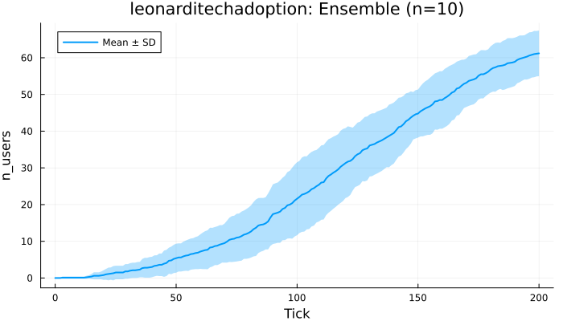
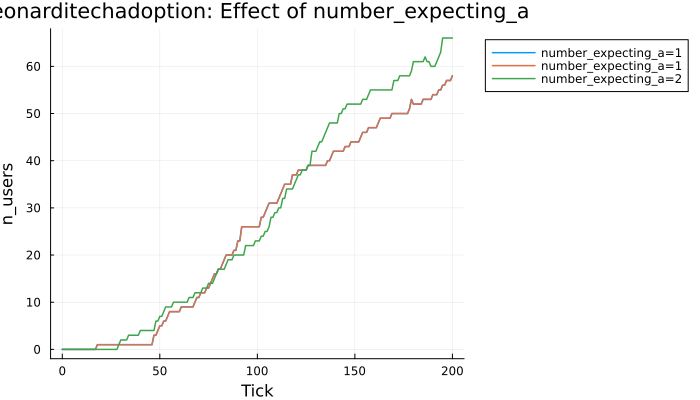

Leonardi Tech Adoption
Overview
This vignette demonstrates the Leonardi Tech Adoption model implemented in ArkModelZoo.jl using the Ark.jl ECS framework.
Parameters
| Parameter | Type | Default | Description |
|---|---|---|---|
number_expecting_a | Int | 1 | number expecting a |
number_expecting_b | Int | 55 | number expecting b |
number_expecting_both | Int | 0 | number expecting both |
number_no_expectations | Int | 44 | number no expectations |
limited_persistence | Bool | true | limited persistence |
tech_transparency | Float64 | 0.1 | tech transparency |
can_learn_unexpectedly | Bool | true | can learn unexpectedly |
use_can_fail | Bool | true | use can fail |
proportion_material_influence | Float64 | 0.05 | proportion material influence |
max_ticks | Int | 200 | max ticks |
Source Code
The Julia code to run this model:
using ArkModelZoo
_, trajectory = run_leonarditechadoption()Time Series

Ensemble Runs
Ten replicates with different random seeds, showing mean ± standard deviation.

Parameter Sensitivity
Varying number_expecting_a.

Appendix: Source Code
This model is implemented in the Ark.jl Entity-Component-System (ECS) framework. The code is split into five files, each with a distinct role:
- Parameters: a mutable struct holding all configurable values.
- Components: lightweight data types attached to individual entities (agents).
- Resources: world-level shared state accessible to all systems.
- Systems: functions that operate on entities each tick, defining model behavior.
- Model: wiring that assembles the world, registers resources and systems, and provides the run entry point.
Parameters (parameters.jl)
The parameter struct uses @kwdef so that every field has a default value and can be overridden by keyword. These defaults match the original NetLogo model’s slider settings.
Base.@kwdef mutable struct LTechParams
number_expecting_a::Int = 1
number_expecting_b::Int = 55
number_expecting_both::Int = 0
number_no_expectations::Int = 44
technology_affordances::Vector{String} = ["a"]
limited_persistence::Bool = true
tech_transparency::Float64 = 0.1
can_learn_unexpectedly::Bool = true
use_can_fail::Bool = true
proportion_material_influence::Float64 = 0.05
max_ticks::Int = 200
seed::Int = 42
end
function _ltech_total_num(params::LTechParams)
return params.number_expecting_a + params.number_expecting_b +
params.number_expecting_both + params.number_no_expectations
endComponents (components.jl)
Components are lightweight data types attached to individual entities (agents). Mutable structs hold per-entity state, while empty tag structs act as markers for the ECS query system to efficiently filter entities.
struct LTechDummy endResources (resources.jl)
Resources are world-level singletons shared across all systems, used for global state and aggregate statistics.
mutable struct LTechState
n_agents::Int
x::Vector{Float64}
y::Vector{Float64}
usage::Vector{Vector{String}}
understanding::Vector{Dict{String,Float64}}
persistence::Vector{Int}
teams::Vector{Vector{Int}}
adj::Vector{Set{Int}}
influencer::Vector{Int} # 0=nobody, -1=technology, >0=person ID
affordances::Dict{String,Int} # single technology resource
end
function LTechState()
LTechState(
0,
Float64[], Float64[],
Vector{String}[],
Dict{String,Float64}[],
Int[],
Vector{Int}[],
Set{Int}[],
Int[],
Dict{String,Int}()
)
end
function _ltech_add_agent!(state::LTechState, x::Float64, y::Float64)
state.n_agents += 1
push!(state.x, x)
push!(state.y, y)
push!(state.usage, String[])
push!(state.understanding, Dict{String,Float64}())
push!(state.persistence, 0)
push!(state.teams, Int[])
push!(state.adj, Set{Int}())
push!(state.influencer, 0)
return state.n_agents
end
mutable struct LTechStats
social_influence::Vector{Float64}
material_influence::Vector{Float64}
n_users::Int
n_active::Int
end
LTechStats() = LTechStats(Float64[], Float64[], 0, 0)Systems (systems.jl)
Systems contain the model logic and execute in a defined order each tick. Each system struct implements either initialize! (run once at setup) or update! (run every tick).
# ─── Helpers ──────────────────────────────────────────────────────────────────
function _ltech_distance(state::LTechState, i::Int, j::Int)
dx = state.x[i] - state.x[j]
dy = state.y[i] - state.y[j]
return sqrt(dx * dx + dy * dy)
end
function _ltech_set_team_radius(state::LTechState)
r = 1
while true
all_ok = true
for i in 1:state.n_agents
cnt = 0
for j in 1:state.n_agents
if i != j && _ltech_distance(state, i, j) <= r
cnt += 1
end
end
if cnt < 4
all_ok = false
break
end
end
all_ok && return r
r += 1
end
end
function _ltech_build_teams!(rng, state::LTechState)
n = state.n_agents
team_radius = _ltech_set_team_radius(state)
# Assign teams: while unassigned people exist
while true
unassigned = Int[]
for i in 1:n
if isempty(state.teams[i])
push!(unassigned, i)
end
end
isempty(unassigned) && break
leader = unassigned[rand(rng, 1:length(unassigned))]
state.teams[leader] = [leader]
# Find candidates within radius with < 4 team memberships
candidates = Int[]
for j in 1:n
if j != leader && _ltech_distance(state, leader, j) <= team_radius &&
length(state.teams[j]) < 4
push!(candidates, j)
end
end
n_members = min(1 + rand(rng, 0:3), length(candidates))
if n_members > 0
shuffle!(rng, candidates)
for k in 1:n_members
c = candidates[k]
push!(state.teams[c], leader)
state.teams[c] = unique(vcat(state.teams[c]))
end
end
end
end
function _ltech_build_connections!(state::LTechState)
n = state.n_agents
# For each agent id used as team label, connect all members sharing it
for roll_call in 1:n
members = Int[]
for i in 1:n
if roll_call in state.teams[i]
push!(members, i)
end
end
for a_idx in 1:length(members)
for b_idx in (a_idx+1):length(members)
a, b = members[a_idx], members[b_idx]
push!(state.adj[a], b)
push!(state.adj[b], a)
end
end
end
end
function _ltech_find_components(state::LTechState)
visited = falses(state.n_agents)
components = Vector{Vector{Int}}()
for i in 1:state.n_agents
if !visited[i]
comp = Int[]
stack = Int[i]
visited[i] = true
while !isempty(stack)
node = pop!(stack)
push!(comp, node)
for nb in state.adj[node]
if !visited[nb]
visited[nb] = true
push!(stack, nb)
end
end
end
push!(components, comp)
end
end
return components
end
function _ltech_fix_network!(rng, state::LTechState)
while true
comps = _ltech_find_components(state)
length(comps) <= 1 && break
a = comps[1][rand(rng, 1:length(comps[1]))]
b = comps[2][rand(rng, 1:length(comps[2]))]
push!(state.adj[a], b)
push!(state.adj[b], a)
end
end
function _ltech_make_small!(rng, state::LTechState)
n_extra = ceil(Int, state.n_agents / 10)
indices = collect(1:state.n_agents)
shuffle!(rng, indices)
for k in 1:min(n_extra, state.n_agents)
i = indices[k]
j = rand(rng, 1:state.n_agents)
while j == i
j = rand(rng, 1:state.n_agents)
end
push!(state.adj[i], j)
push!(state.adj[j], i)
end
end
function _ltech_build_network!(rng, state::LTechState)
_ltech_build_teams!(rng, state)
_ltech_build_connections!(state)
_ltech_fix_network!(rng, state)
_ltech_make_small!(rng, state)
end
# ─── Interaction helpers ──────────────────────────────────────────────────────
function _ltech_learn_from!(rng, understanding::Dict{String,Float64},
source::Dict, chance::Float64, influence::Float64)
isempty(source) && return
rand(rng) >= chance && return
keys_src = collect(keys(source))
insight = keys_src[rand(rng, 1:length(keys_src))]
if !haskey(understanding, insight)
understanding[insight] = 0.0
end
src_val = Float64(source[insight])
direction = src_val >= 0 ? 1.0 : -1.0
understanding[insight] = understanding[insight] + influence * direction
if abs(understanding[insight]) > 1.0
understanding[insight] = direction
end
end
function _ltech_use_technology!(rng, state::LTechState, params::LTechParams, i::Int)
# Unexpected learning
if params.can_learn_unexpectedly && rand(rng) < 0.05
aff_dict = Dict{String,Float64}(k => Float64(v) for (k, v) in state.affordances)
_ltech_learn_from!(rng, state.understanding[i], aff_dict,
params.tech_transparency, 1.0)
end
# Find features with positive expectation (equivalent to out-hold-neighbors with strength > 0)
positive_features = String[]
for (feat, val) in state.understanding[i]
if val > 0
push!(positive_features, feat)
end
end
isempty(positive_features) && return
use_feat = positive_features[rand(rng, 1:length(positive_features))]
chance_works = params.use_can_fail ? 0.95 : 1.0
if haskey(state.affordances, use_feat) && rand(rng) < chance_works
state.understanding[i][use_feat] = 1.0
if !(use_feat in state.usage[i])
push!(state.usage[i], use_feat)
end
else
state.understanding[i][use_feat] = -1.0
filter!(f -> f != use_feat, state.usage[i])
end
end
function _ltech_interact!(rng, state::LTechState, params::LTechParams, i::Int)
state.influencer[i] = 0
if state.persistence[i] <= 0
return
end
# 25% chance of determining influencer
if rand(rng) < 0.25
if rand(rng) < params.proportion_material_influence
state.influencer[i] = -1 # technology
else
neighbors = collect(state.adj[i])
if !isempty(neighbors)
state.influencer[i] = neighbors[rand(rng, 1:length(neighbors))]
end
end
end
inf = state.influencer[i]
if inf > 0
# Social influence: learn from neighbor's understanding
_ltech_learn_from!(rng, state.understanding[i],
state.understanding[inf], 1.0, 0.2)
elseif inf == -1
# Material influence: interact with technology
if !isempty(state.understanding[i])
_ltech_use_technology!(rng, state, params, i)
else
aff_dict = Dict{String,Float64}(k => Float64(v) for (k, v) in state.affordances)
_ltech_learn_from!(rng, state.understanding[i], aff_dict,
params.tech_transparency, 1.0)
end
state.persistence[i] -= 1
end
end
function _ltech_update_influences!(state::LTechState, stats::LTechStats)
n_active = 0
n_social = 0
n_material = 0
for i in 1:state.n_agents
if state.persistence[i] > 0
n_active += 1
if state.influencer[i] > 0
n_social += 1
elseif state.influencer[i] == -1
n_material += 1
end
end
end
if n_active > 0
push!(stats.social_influence, n_social / n_active)
push!(stats.material_influence, n_material / n_active)
end
end
function _ltech_tally!(state::LTechState, stats::LTechStats)
stats.n_users = count(i -> !isempty(state.usage[i]), 1:state.n_agents)
stats.n_active = count(i -> state.persistence[i] > 0, 1:state.n_agents)
end
# ─── Systems ──────────────────────────────────────────────────────────────────
struct InitLTechSystem <: System end
function initialize!(::InitLTechSystem, world::World)
params = get_resource(world, LTechParams)
rng = get_resource(world, RNGResource).rng
state = get_resource(world, LTechState)
stats = get_resource(world, LTechStats)
total = _ltech_total_num(params)
# Create agents at random positions (NetLogo patch coords -16..16)
for _ in 1:total
x = Float64(rand(rng, -16:16))
y = Float64(rand(rng, -16:16))
_ltech_add_agent!(state, x, y)
end
# Assign initial understanding
unassigned = collect(1:total)
shuffle!(rng, unassigned)
idx = 1
for _ in 1:params.number_expecting_a
state.understanding[unassigned[idx]]["a"] = 1.0
idx += 1
end
for _ in 1:params.number_expecting_b
state.understanding[unassigned[idx]]["b"] = 1.0
idx += 1
end
for _ in 1:params.number_expecting_both
state.understanding[unassigned[idx]]["a"] = 1.0
state.understanding[unassigned[idx]]["b"] = 1.0
idx += 1
end
# remaining have no expectations
# Build network
_ltech_build_network!(rng, state)
# Set persistence
pers = params.limited_persistence ? 3 : 1000
for i in 1:total
state.persistence[i] = pers
end
# Adopt technology: create affordances from params
for feat in params.technology_affordances
state.affordances[feat] = 1
end
_ltech_tally!(state, stats)
return nothing
end
struct LTechGoSystem <: System end
function update!(::LTechGoSystem, world::World)
params = get_resource(world, LTechParams)
rng = get_resource(world, RNGResource).rng
state = get_resource(world, LTechState)
stats = get_resource(world, LTechStats)
# Check stop: all persistence = 0
if all(p -> p <= 0, state.persistence)
get_resource(world, Terminate).stop = true
return nothing
end
# Shuffle agent order (NetLogo ask randomizes)
order = collect(1:state.n_agents)
shuffle!(rng, order)
for i in order
_ltech_interact!(rng, state, params, i)
end
_ltech_update_influences!(state, stats)
_ltech_tally!(state, stats)
return nothing
end
struct LTechTerminationSystem <: System end
function update!(::LTechTerminationSystem, world::World)
params = get_resource(world, LTechParams)
tick = get_resource(world, Tick)
if tick.tick + 1 >= params.max_ticks
get_resource(world, Terminate).stop = true
end
return nothing
endModel (model.jl)
The model file assembles all pieces: it creates the ECS World with the required component types, registers resources, builds the Scheduler with systems in execution order, and exposes the public run entry point. The observer pattern records the trajectory each tick.
function leonarditechadoption_world(; initial_capacity::Int = 128)
return World(LTechDummy; initial_capacity=initial_capacity, allow_mutable=true)
end
function leonarditechadoption_systems()
return (
InitLTechSystem(),
LTechGoSystem(),
LTechTerminationSystem(),
)
end
function leonarditechadoption_model(params::LTechParams = LTechParams())
world = leonarditechadoption_world()
_add_standard_resources!(world, params)
add_resource!(world, LTechState())
add_resource!(world, LTechStats())
scheduler = Scheduler(world, leonarditechadoption_systems())
initialize!(scheduler)
return scheduler
end
struct LTechObserver end
function leonarditechadoption_headers(::LTechObserver)
return ["n_users", "n_active"]
end
function leonarditechadoption_values(::LTechObserver, world::World)
stats = get_resource(world, LTechStats)
return Float64[stats.n_users, stats.n_active]
end
function run_leonarditechadoption(; params::LTechParams = LTechParams(), observe::Bool = true)
return _run_model(leonarditechadoption_model, LTechObserver(), leonarditechadoption_values; params, observe)
end